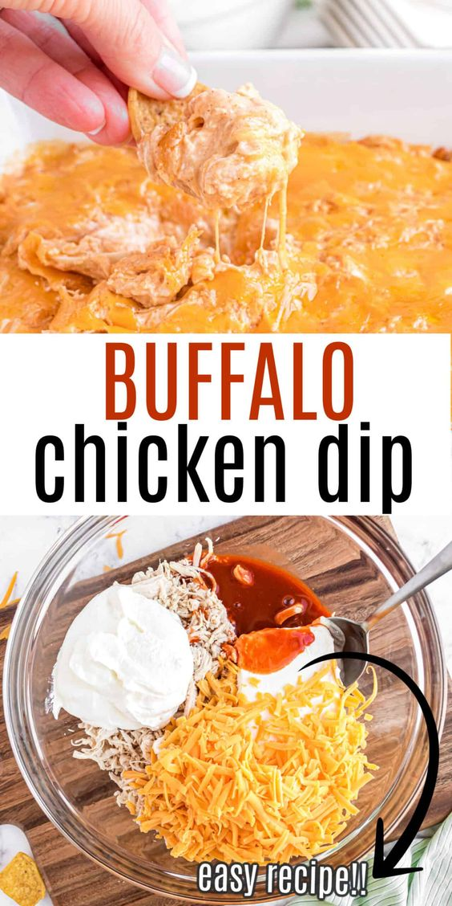

I find that this buffalo chicken dip is the perfect thing to have at a party of a family gathering. It taste super good and is fast to make.
Plus it all gose in one pot that you can bring with you and serve out of. It has a really good consistency and not to much spice. Altho if you like spicy
things you can simlpy add extra franks Red Hot but make sure to not add to much because it will overpower the amazing flavors in the dip.

ingredients
1 lb of shredded chicken
8oz of cream cheese
1 cup of ranch
3/4 cup of franks red hot sauce
1 1/2 cups of shredded cheddar cheese
Recipe
Shred all of yuor chiken and add to your insapot.
Put all of you other ingredientsin into the insapot and coook on low for three hours.
after the dip has cooked enjoy with vegtadles or crackers.